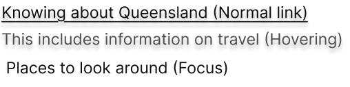
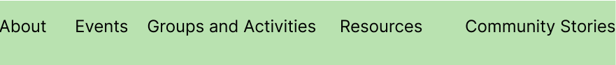
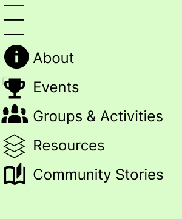

This card groups related information for easy scanning. Action areas are clearly indicated.
Behavioural Design
What is Behavioural Design?
Behavioural design focuses on usability and function-how
pleasurable and effective a website is to use, whether
it fulfils its purpose, and whether users feel competent
and in control.
Key principles: Discoverability,
Feedback, Conceptual Models, Signifiers, Mapping,
Constraints (Norman’s principles).
Links

- Discoverability: Underlined, plain and shadowed such that it clearly looks like a link when its normal, hovered and focused
- Feedback: Hover/focus state changes with changes from underline to shadows to darker shade for clear response.
-
WCAG 2.4.4: Clear link text helps
everyone understand where a link goes, especially
those using assistive technology. Make link text
descriptive on its own when you can. Context in the
same sentence or nearby can also explain a link.
Keep link text consistent for the same destination
and different for different destinations. If linking
to an accessible version, say so in the link. Only
if the link's purpose is truly unclear on the page
is a less descriptive link acceptable. Intentional
obscurity (like in games) is also an exception.
Navigation Bar


- Discoverability: Logical grouping, clear labels with dedciated icons for each navigation bar component aids in making it evident what the component means and one click upon it to explore more or opens a new page related to the same.
- Active State: Current page is highlighted (aria-current="page").
-
WCAG 3.2.3 and WCAG 1.1.1:
Navigation is important because it ensures users can
easily find their way around a website. Consistent
navigation (like menus, links, and search) in the
same place and with the same labels on every page
makes the site predictable and less confusing. This
is especially helpful for people with cognitive
disabilities, those using screen readers, and anyone
who relies on consistent structure to navigate
effectively. Predictable navigation reduces
cognitive load and improves overall usability.
Icons
-
Icons playing an important role in wesbite development, they ease in communication and aid in better understanding the general mass.
- Feedback: Hover/focus state changes with changes from underline to shadows to darker shade for clear response.
- >
Icons
on the other hand aid in better visulization, ease
in navigation and better visualization.
The goal of this Success Criterion is to make
information in non-text content (like images and
videos) accessible by providing text alternatives.
These text descriptions can be converted into
various formats (like speech, braille, or simpler
language) to meet different user needs. This ensures
that people who can't see or hear the content can
still understand it. Text alternatives also open
possibilities for future translations, such as into
sign language.
Cards
- Conceptual Model: Familiar layout supports quick recognition.
- Constraints: One purpose per card prevents overload.
-
WCAG 1.3.2: Meaningful sequence- If
the order of content on a webpage matters for
understanding, that order must be kept for
everyone-including people using screen readers or
other assistive technology. Some users read web
pages with tools that don’t show the visual layout
(like screen readers). If content is out of order in
the code, it can be confusing or misleading. Always
keep important content in the right order in your
HTML, so everyone gets the information in the way it
makes sense. This ensures your website is accessible
and understandable for all users, no matter how they
access it.
Buttons
- Affordance: Looks clickable, labeled with action.
- Feedback: Visual state and colour of the buttons change on hover, click and also release.
- Constraints: Disabled state when not usable.
-
WCAG 1.4.1: Don’t use color as the
only way to show information, actions, or status on
your website. Not everyone sees color the same way.
Some people are colorblind, have low vision, or use
screens that don’t show color well. If you use only
color to show meaning, these users might miss
important information. You can use color to help
users-but never rely on color alone to communicate
something important.In short: Color should never be
the only way you show information or prompt action.
Always add another visual clue.
Sample Form
- Feedback: Validation messages and confirmation.
- Constraints: Field types and limits prevent errors.
- WCAG 3.3.2: Whenever a form asks users to enter information-like their name, email, or password-each field must have a clear label or instructions so users know exactly what to enter. Always provide clear, visible labels and any needed instructions for every form field, so everyone knows what to enter and how.